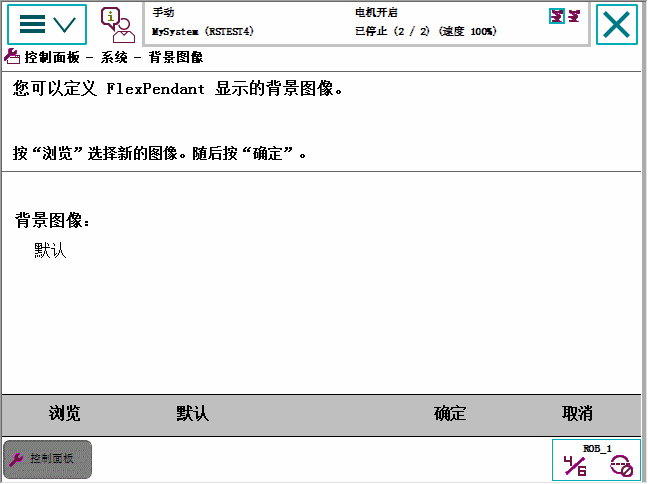

FlexPendant 上的背景图像可以更改。控制器硬盘上的任何图像文件（照片及图示）都可使用。
为了达到最佳效果，使用符合以下建议的图像：
640 x 390 万像素（宽、高）
格式 gif
使用本程序更改 FlexPendant 上的背景图像。
操作
1
在 ABB 菜单上，点击 Control panel（控制面板）。
2
点击 FlexPendant，然后点击 Background Image（背景图像）。

3
点击 Browse（浏览）可查找控制器硬盘上的另一张图片。
4
点击 Default（默认）可恢复原背景图。
5
点击 OK（确定）。